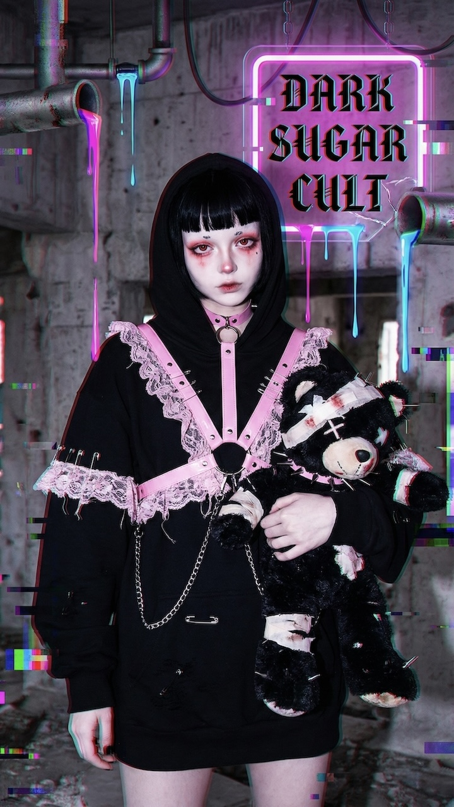
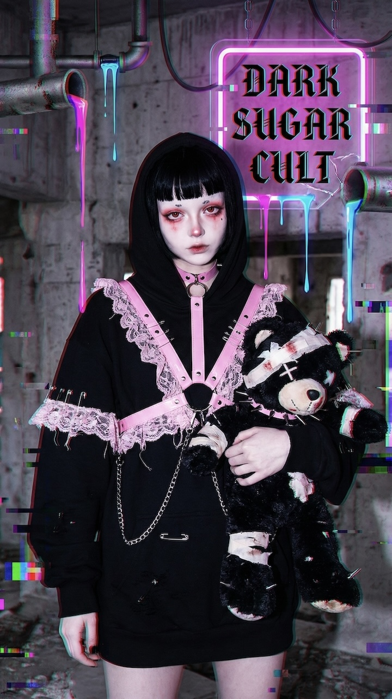
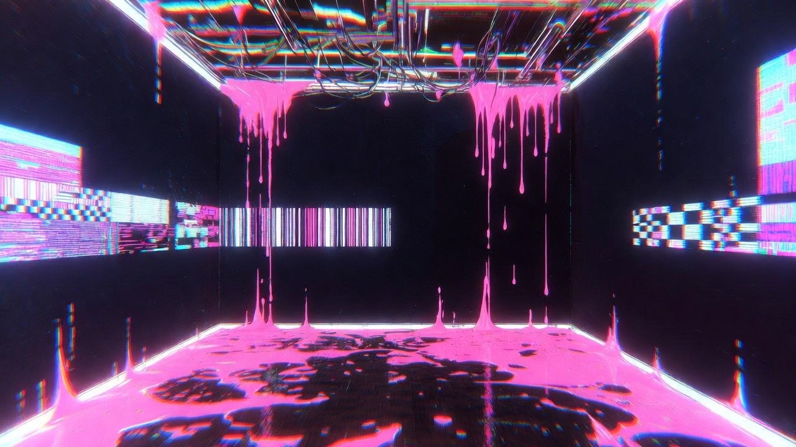
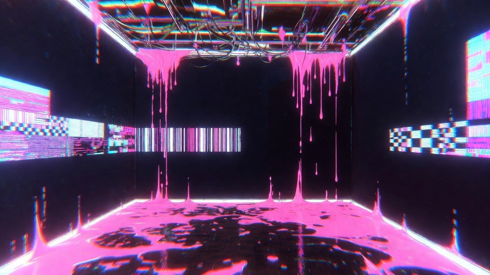

Toxic Sweetness,
Structural Decay.
甘さは薬品的に、毒性は秩序の内部に配置する。均整は保つが、座標は従わない。
Classical Decadence vs. Digital Noise — それは「拒絶反応」としてのUI。
Toxic Sweetness
彩度85%以上のピンクと、明度5%以下の黒を隣接。甘さと毒性の同居を、単なる可愛さに落とさない。
Structural Decay
12カラムの秩序を前提に、意図的なズレとオーバーレイで破壊する。構造は見せ、従属は拒む。
Visceral Texture
高粘度の液体表現とノイズ粒子を混在。淡いグラデーションは禁止。輪郭と表面張力で「粘度」を描く。
 

 
